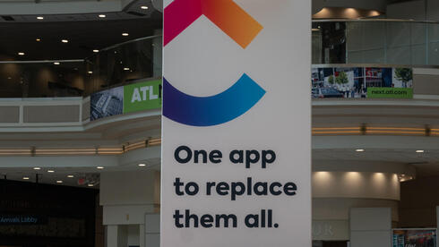
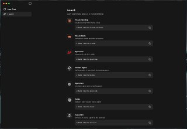
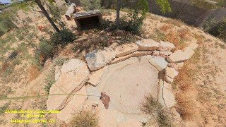

WIREDנמוכה24.05.2026, 00:00
I used the Gemini app to generate lifelike s featuring a digital clone of myself. Google sees this as the future of creation. I’m still creeped out.
אימות 1
I used the Gemini app to generate lifelike s featuring a digital clone of myself. Google sees this as the future of creation. I’m still creeped out.

Global affairs chief Chris Lehane wants to tone down the debate over AI’s societal impacts—and get states to pass laws that won’t derail OpenAI’s meteoric rise.

חברת התוכנה קליק-אפ מפטרת 22% מעובדיה ומציגה מודל מהפכני: השקעה ב'מהנדסי 100x' שירוויחו שכר של מיליון דולר בשנה בזכות שילוב סוכני בינה מלאכותית.

קליק-אפ תפטר 22% מעובדיה, אך המנכ"ל זב אוונס טוען שלא מדובר בקיצוץ הוצאות אלא בשינוי מודל העבודה סביב AI: פחות תפקידים קיימים, יותר עובדים שמפעילים סוכני בינה מלאכותית ומגיעים לתפוקה גבוהה במיוחד.
The coding skills of AI models are about to make it much easier to build and deploy robots.

גוגל מתחילה להפיץ עיצוב חדש לג׳מיני באפליקציה ובווב, כולל בורר מודלים מעודכן. במקביל, אפליקציית Google AI Studio כבר הופיעה בחנות באנדרואיד עם הרשמה מוקדמת, לקראת השקה צפויה בתחילת השנה הבאה.
Meta בוחנת אפליקציה נפרדת בשם Forum, שמרכזת פיד של דיונים ושיחות בסגנון Reddit. החידוש המרכזי הוא לשונית AI בשם Ask, שאמורה לאסוף תשובות מקהילות שונות לשאלות המשתמשים ולהפוך את קבוצות פייסבוק לפלטפורמת דיונים עצמאית יותר.

מודל Gemma 4 הופך עכשיו למהיר פי 3 🚀. המערכת משתמשת כעת במנגנון חדש המאפשר למודל לחזות מספר טוקנים במקביל, במקום לייצר אותם אחד-אחד.
גוגל הציגה את אנטיגרביטי ככלי סוכנים שמתחרה בקודקס ובקלוד קוד, ואף טענה שבנה מערכת הפעלה מאפס באמצעות 93 סוכנים במשך 12 שעות ובעלות של פחות מאלף דולר. זה נשמע מרשים, אבל בלי לראות את התוצר קשה להעריך אם מדובר בקפיצה אמיתית או בעיקר בדמו שיווקי.
סטארט־אפ אמריקאי משתמש במערכת BrainEx כדי לשמר פעילות בסיסית במוחות שנתרמו לאחר מוות, באמצעות הזרמת חמצן ותחליף דם. המטרה היא לבחון תרופות לאלצהיימר ולפרקינסון במודל אנושי מדויק יותר, כשלטענת המפתחים אין במוחות מודעות.

פרויקט Human Operator של MIT מציג אבטיפוס לביש שמאפשר ל-AI להניע זמנית את היד באמצעות זיהוי חזותי, פקודות קוליות וגירוי שרירים חשמלי. המערכת, שזכתה בהאקתון MIT Hard Mode 2026, כבר הדגימה שליטה בתנועות לציור ולנגינה בפסנתר.

שמח לשתף שהתחלתי להגיש את ״פינת ה-AI״ במהדורת היום של חדשות 12 עם עמליה דואק ועופר חדד! מדי חמישי ניפגש על המסך (בלי נדר בעזרת השם) - ונדבר על יוז קייסים פרקטיים וכיפיים - שמתאימים לכל אחת ואחת!

יוצר התוכן מספר כיצד השתמש בקלוד במובייל כדי להמיר עיצוב חריטה לטבעת לקובץ שהתאים לתוכנת הצורף, וחסך לדבריו שעות של עבודה ידנית.

גוגל הציגה שורת עדכוני AI, בהם Gemini 3.5 Flash שיהפוך לברירת המחדל באפליקציה ובחיפוש, מודל Gemini Omni לעבודה בין סוגי קלט ופלט שונים, מצב Ask YouTube לשיחה עם סרטונים, ו-Docs Live לעריכת מסמכים בקול. SynthID יורחב גם לכרום ולחיפוש לזיהוי תוכן שנוצר ב-AI.
בית הספר להייטק ו־AI של Google ואוניברסיטת רייכמן משיקים קורס AI Native Developer למפתחים, עם דגש על עבודה מעשית בכלים כמו Cursor, Claude Code, RAG, MCP וסוכני AI בתהליך פיתוח אמיתי.

Runway מציגה את Aleph 2.0, כלי AI לעריכת וידאו שמאפשר להחליף אובייקטים, רקעים ופרטים כמו צבעים ותסרוקות באמצעות פרומפט. המערכת שומרת על תאורה ופיזיקה עקביות, מחילה שינוי מפריים אחד על כל הסרטון, ומציעה תצוגה מקדימה לפני יצוא ב־1080p עד 30 שניות.
פינת ה-AI השבועית מציגה דרכים שבהן הורים יכולים להשתמש בכלי בינה מלאכותית לחיזוק מיומנויות אצל ילדים, דרך סיפורי השלכה, משחקים, חוברות תרגול וצביעה וגם ספרי ילדים.
סטארבקס הפסיקה אחרי תשעה חודשים את ניסוי ניהול המלאי מבוסס ה-AI, לאחר שהמערכת לא פתרה את המחסור בחומרי גלם ואף יצרה בלבול תפעולי.
הפוסט מציג טענת "חינם", אבל בלי אימות ברור מול המוצר הרשמי, ולכן צריך לראות בזה טענה שדורשת בדיקה.

תנועה מרשימות בקוד פתוח. המודל מתאים במיוחד למי שמחפש אלטרנטיבה חזקה וגמישה ליצירת סרטוני AI ישירות מהמחשב (לבעלי כרטיסי מסך חזקים 😉). 🔗 קישור למודל ב-Hugging Face:

הפוסט מציג טענת "חינם", אבל בלי אימות ברור מול המוצר הרשמי, ולכן צריך לראות בזה טענה שדורשת בדיקה.

אנדריי קרפתי מצטרף לאנתרופיק! בינה מלאכותית בטלגרם - t.me/AI_tg_il

גוגל הכריזה על Gemini 3.5 Flash, דגם מהיר וחזק יותר שלדבריה עוקף את 3.1 ברוב המדדים, והוא צפוי להפוך לברירת המחדל בחלק מהשירותים.

לרחפן 360 של dji יש ai מובנה שיודע לזהות אובייקטים וליקוב אחריהם. לקחתי את ה-ai שלו לסיבוב עם הופ הצ'יטה. קבלו איזה יפה יצא!

הפוסט מציג טענת "חינם", אבל בלי אימות ברור מול המוצר הרשמי, ולכן צריך לראות בזה טענה שדורשת בדיקה.
לטענת הפוסט, מדובר במעטפת לא רשמית ל-Claude Code שמתחברת למודלים אחרים, לא בגישה חינמית רשמית ל-Claude של Anthropic.

גוגל הציגה מאיץ חדש ל-Gemma 4 שמאפשר יצירת טוקנים במקביל בעזרת מודל קטן נוסף, ומדווחת על שיפור מהירות של עד פי 3. בשלב זה עדיין אין גרסה ל-LM Studio.
לפי גורמים איראנים, הוא כולל פתיחה מחדש של מצר הורמוז ללא אגרות, סיום הלחימה בכל החזיתות ודחיית הדיון בסוגיית הגרעין ל־30 עד 60 יום.
הניסוח הזהיר יותר הוא: סמ"ר ש', לוחמת תיעוד, נפצעה קשה בדרום לבנון לאחר ששני כלים מתאבדים התפוצצו סמוך לכוח מגדוד 601 ופצעו שבעה לוחמים. זמן קצר קודם לכן תיעדה מחסן אמצעי לחימה של כוח רדואן שאותר בחדאתא.
הניסוח הזהיר יותר הוא: הקואליציה מנסה להאיץ את רפורמת השידורים של שלמה קרעי לפני פיזור הכנסת, אך יועמ"שית הכנסת מזהירה מהליך חריג ולא שקוף בוועדת התקשורת, שעלול לפגוע בתקינות החקיקה.
בישראל מעריכים שהסיכוי לחידוש הלחימה מול איראן קטן, אך חוששים שהסכם שטראמפ מקדם יתמקד בשיט בהורמוז וידחה את סוגיית הגרעין. החשש הוא שאיראן תישאר עם יכולת משמעותית, ושישראל תידרש גם לוויתורים בלבנון שיחזקו את חיזבאללה.
סמ"ר נועם המבורגר, בן 23 מעתלית ולוחם טכנולוגיה ואחזקה בגדוד 9 של חטיבה 401, נהרג מפגיעת רחפן נפץ במוצב בירנית סמוך לגבול לבנון. חייל נוסף נפצע קשה ונגד נפצע קל; רחפן נוסף התפוצץ כעבור כ-25 דקות ללא נפגעים.

Two papers published this week have reignited debates about the risk posed by “Q-day” to the cryptography that underpins digital assets.
Long positions—or bets that an asset's price will rise—dominate the carnage with $827 million worth of liquidations.

Imagine having an application like Uber on your phone, but instead of a company operating in the middle, it ran completely autonomously.
Milei's government unveiled a social digital twin to overhaul public policy—announced via a full of AI slop, grammatical errors, and a deepfake of a minister.

Fresh inflows into XRP-linked funds and a spike in newly created wallets suggest some traders may be rotating into the token while trimming exposure to crypto’s largest assets.

עדכון קצר סביב הירוקים, שרשמו עוד תוצאה מאכזבת עם תיקו מול הפועל פ"ת מול אצטדיון חצי ריק, מבינים שאף על פי השחקנים הצעירים שמקבלים הזדמנויות, המועדון זקוק לשינוי, בעיקר בגזרת הזרים: "כולם
בלם הפועל פ"ת נפרד מחבריו וצפוי לעזוב, במועדון בוחנים חלופות לעמדה ובמקביל טרם הוכרע עתידו של קוסטה.

הפועל פתח תקוה תעלה מול מכבי תל אביב במדי רטרו מעונת 99/00, לצד טקס הוקרה לשחקני אותה עונה ולחברי עמותת הכחולה.